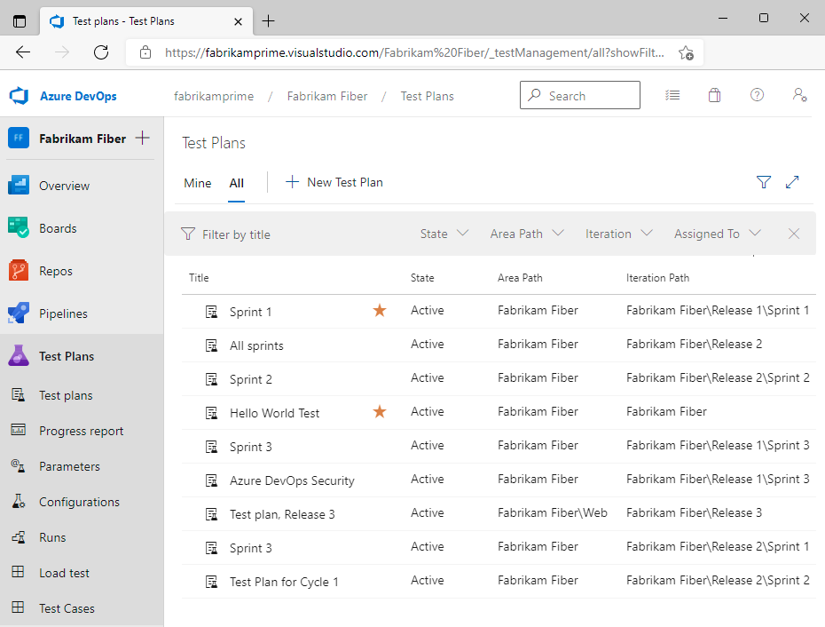
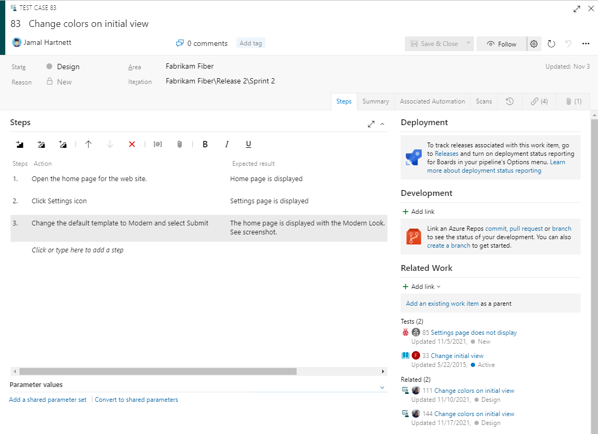
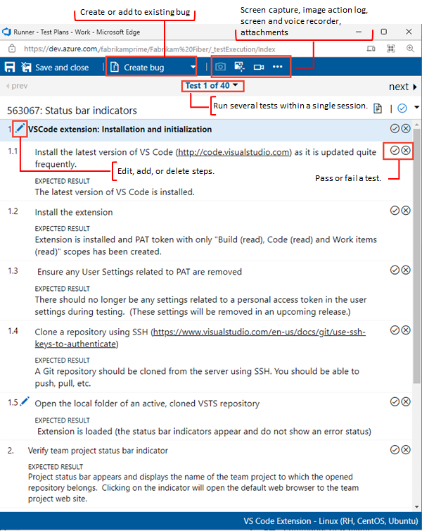
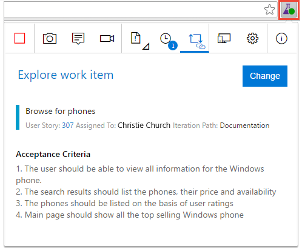

瀏覽器端的手動測試管理
Azure Test Plans 是 Azure DevOps 五大服務之一,提供一套瀏覽器端 (browser-based) 的測試管理工具。它的核心職責不是執行程式碼,而是規劃、記錄與追蹤「由人來進行」的測試活動,涵蓋四種典型情境:
- 規劃性手動測試——依預先撰寫的步驟,逐步驗證功能是否符合預期。
- 使用者驗收測試 (UAT)——交由使用者或業務角色確認系統符合需求。
- 探索性測試——不預先寫好腳本,邊操作邊探索並記錄發現。
- 利害關係人意見回饋——向非工程角色蒐集對特定功能的回應與建議。
與自動化測試的對照是理解它的關鍵。自動化測試談的是開發者撰寫、由機器自動執行的測試 (unit test、整合測試),強調快速、可重複、納入 CI。但有些驗證難以或不值得自動化——介面操作的直覺、跨步驟的真實使用情境、利害關係人的主觀判斷。Test Plans 補的正是這塊「人工/手動」的測試,與自動化測試互為補充,而非取代。

五種測試相關的工作項目
Test Plans 的內容都以工作項目 (work item) 形式儲存,與 Boards 共用同一套資料模型。共有五種測試相關的類型,彼此構成一個由上而下的層級:
| 工作項目 | 角色 | 關係 |
|---|---|---|
| Test Plan | 一次測試活動的最上層容器,通常對應一個 Sprint 或一次發行 | 內含一或多個 Test Suite |
| Test Suite | 測試案例的分組,用以組織同類或同需求的測試 | 隸屬一個 Test Plan,內含多個 Test Case |
| Test Case | 單一測試的定義:一組測試步驟與對應的預期結果 | 可同時被多個 Suite 引用 |
| Shared Steps | 可重複使用的步驟集 (例如「登入系統」),供多個 Test Case 共用 | 被 Test Case 引用 |
| Shared Parameters | 共用的參數資料集,讓同一測試以不同資料反覆執行 | 被 Test Case 引用 |
初學時容易把三個相近的詞混為一談,釐清它們是後續操作的基礎:
- Test Case (測試案例)——測試的「定義」,描述要做哪些步驟、預期得到什麼結果。它是靜態的藍圖。
- Test Run (測試執行)——依某個計劃實際執行一或多個 Test Case 的一次「實例」。同一個 Test Case 可被執行多次,每次都是一個新的 Run。
- Test Result (測試結果)——某個 Test Case 在某次 Run 中的判定:通過 (pass) 或失敗 (fail)。
步驟與預期結果的成對描述
測試案例多以格線 (grid) 檢視編輯,讓步驟逐行列出。每個 Test Case 的核心是一組成對的內容:操作步驟 (step) 與該步驟的預期結果 (expected result)。執行時,測試人員依步驟操作,再比對實際結果是否符合預期,逐步判定通過或失敗。

撰寫案例時有兩項機制能提升效率與覆蓋度:
- Shared Steps (共用步驟)——將重複出現的步驟序列 (如「開啟首頁並登入」) 抽成共用步驟,供多個案例引用。日後流程變動時,只需修改一處。
- Shared Parameters (共用參數)——同一組步驟需以不同資料反覆驗證時 (例如以多組帳號密碼登入),以參數帶入資料,使一個案例展開為多筆資料驅動的執行。
此外,測試案例可連結到 User Story、Feature 或 Bug,建立可追蹤性 (traceability)。如此一來,從需求即可看出有哪些測試在驗證它、目前通過與否——這正是 Azure DevOps 跨服務整合的價值延伸到測試領域的體現。
逐步標記通過或失敗
測試案例備妥後,從套件的 Execute (Run) 索引標籤啟動 Test Runner。Test Runner 有 web 與 desktop 兩種形式:web 版直接在瀏覽器執行,適合一般網頁應用;desktop 版則用於需操作桌面應用程式的情境。執行時,Runner 會依序顯示每個步驟,測試人員逐步操作並標記每一步為通過或失敗,最終彙整成該案例的測試結果。

Test Runner 的價值不只在於記錄通過與否,更在於執行過程中能自動蒐集診斷資料:
- 擷取截圖標註介面上的問題位置。
- 記錄操作步驟 (action log),完整保留操作軌跡。
- 進行畫面錄影,重現問題發生的過程。
當測試失敗時,可在 Runner 中當場建立 bug。此時系統會自動把上述診斷資料附加到該 bug,並連結回對應的需求與 build 版本。開發人員收到的不再是「某功能壞了」的模糊描述,而是帶有重現步驟、截圖、錄影與版本資訊的完整缺陷紀錄。
不需腳本也能測,人人都能回饋
並非所有測試都適合預先寫好腳本。當功能仍在早期階段、或想以使用者視角自由探索時,探索性測試 (exploratory testing) 更為合適。Azure DevOps 為此提供 Test & Feedback 擴充功能——一個瀏覽器擴充 (支援 Chrome、Edge、Firefox),且免費。
使用此擴充,測試人員無須預先建立 Test Case,即可一邊操作應用程式、一邊擷取截圖、錄影與註記。探索過程中發現的問題可即時記錄,並回填成 bug 或新的測試案例。這讓測試的起點從「先寫腳本」轉為「邊用邊記」,更貼近真實使用情境。

同一個擴充功能也用於蒐集利害關係人意見回饋。團隊可對特定功能發出 feedback 請求,行銷、業務等非工程的利害關係人即可在不熟悉開發工具的前提下,以擴充功能回應意見、附上截圖與評分。由於探索性測試與回饋不需付費的 Test Plans 授權,連 Stakeholder 層級都能參與,擴大了測試與回饋的參與面。
看得見的測試狀態
測試執行的成果需要被彙整、被看見,才能支持發行決策。Test Plans 在報告層面提供數種工具:
- Progress Report——彙整一個測試計劃的整體進度:多少案例已完成、通過、失敗、被阻擋 (blocked),一頁掌握測試狀態。
- 測試追蹤圖表 (test tracking chart)——將測試結果以圖表呈現,並可釘選到 Dashboard (見 Lesson 01),成為團隊每日共同畫面的一部分。
- 需求品質 (Requirements quality) widget——在儀表板上呈現各需求對應的測試通過狀況,直接回答「這個需求驗證得如何」。
而測試的全貌不止於手動。Test Plans 可與 Azure Pipelines 整合 (見 Lesson 04):pipeline 透過 Publish Test Results 之類的工作,將自動化測試的結果發布到 Azure DevOps,與手動測試的結果彙整在同一處檢視,測試分析近乎即時更新。如此,手動與自動兩條測試路徑的成果,最終匯流為對品質的單一視圖。